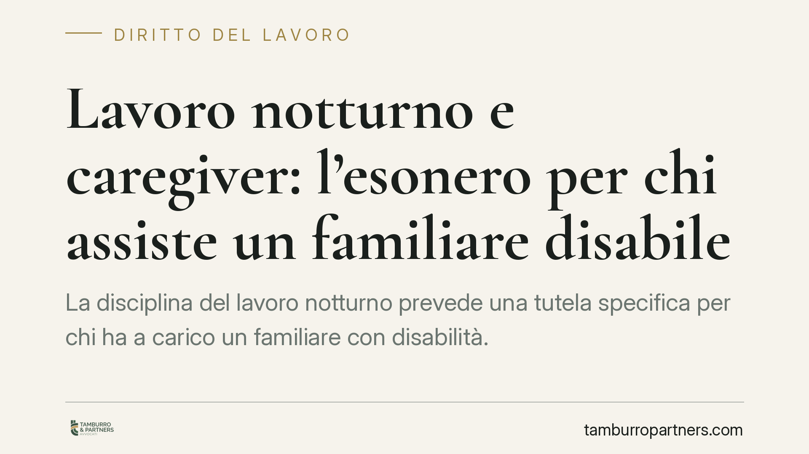

Lavoro notturno e caregiver: l'esonero per chi assiste un familiare disabile
La disciplina del lavoro notturno prevede una tutela specifica per chi ha a carico un familiare con disabilità. Un orientamento interpretativo recente valorizza in senso estensivo tale protezione, ma restano aperte questioni sul grado di invalidità richiesto. Vediamo cosa dice la norma, quali sono i profili controversi e come muoversi sia dal lato del lavoratore sia da quello del datore di lavoro.

Il caso
La questione ricorrente è semplice da enunciare e complessa da risolvere: il lavoratore che assiste un familiare con disabilità può opporsi legittimamente all'assegnazione al turno di notte?
La risposta dipende da due variabili: il tipo di legame con la persona assistita e, soprattutto, il grado di invalidità richiesto dalla legge perché la tutela operi. Su quest'ultimo punto esistono letture divergenti.
Avvertenza sulle fonti. La materia è oggetto di pronunce della Corte di Cassazione e della Corte Costituzionale. Prima di invocare una specifica massima è indispensabile verificarne gli estremi sulla banca dati ufficiale della Cassazione (CED/Italgiure). In questa sede trattiamo l'orientamento interpretativo, non una singola decisione di cui non sia stata confermata l'esatta portata.
Inquadramento normativo
Il riferimento è il D.Lgs. 66/2003, che disciplina l'orario di lavoro. L'art. 11 individua i soggetti che non sono obbligati a prestare lavoro notturno. Tra questi rientra, secondo il testo normativo, la lavoratrice madre con figlio di età inferiore a tre anni (o, in alternativa, il padre convivente), la lavoratrice o il lavoratore unico genitore affidatario di un figlio convivente di età inferiore a dodici anni, e la lavoratrice o il lavoratore che abbia a proprio carico un soggetto disabile ai sensi della Legge 104/1992.
La lettera esatta del comma e la formulazione precisa dell'ipotesi relativa al disabile a carico vanno riscontrate sul testo vigente, perché da quella formulazione discende l'ampiezza della tutela.
Il nodo interpretativo è il seguente: la norma richiede che il familiare assistito sia portatore di disabilità grave ai sensi dell'art. 3, comma 3, della L. 104/1992, oppure è sufficiente la condizione di disabilità in senso ampio?
L'orientamento tradizionale, anche alla luce di pronunce della Corte Costituzionale, tende a riservare le tutele più intense del caregiver alle ipotesi di disabilità grave. Un indirizzo più recente valorizza invece una lettura estensiva, ritenendo che l'esonero dal lavoro notturno possa prescindere dalla qualificazione di gravità. Si tratta di un'interpretazione plausibile ma non pacifica: chi intende farvi affidamento deve verificarne il consolidamento.
La ratio della tutela aiuta a orientarsi: la norma protegge la funzione di cura, cioè l'effettiva possibilità di assistere un familiare in condizione di fragilità. È una protezione funzionale, non un privilegio astratto legato alla mera esistenza di un certificato.
Implicazioni pratiche
Per il lavoratore, l'esonero non è automatico né illimitato. Occorre che l'assistenza sia reale e documentabile: la tutela è pensata per chi effettivamente cura il familiare, non per chi la invochi in via difensiva. Un rifiuto del turno notturno privo di presupposti può legittimare contestazioni disciplinari.
Il rifiuto fondato sui presupposti di legge, al contrario, non è inadempimento: l'eventuale provvedimento disciplinare o organizzativo adottato in violazione della tutela può essere impugnato. Il rimedio tipico non è la "reintegra": si tratta dell'annullamento del provvedimento illegittimo e dell'eventuale risarcimento del danno conseguente.
Per il datore di lavoro, l'assegnazione al notturno di un dipendente che rientra nelle categorie protette espone a contenzioso. È opportuno istruire la posizione prima di procedere, verificando documentazione e presupposti, ed evitando automatismi nella turnazione.
Cosa fare in concreto
- Lavoratore: comunica per iscritto al datore la situazione di assistenza, allegando la documentazione sanitaria e amministrativa relativa alla condizione del familiare.
- Lavoratore: verifica in quale ipotesi dell'art. 11 D.Lgs. 66/2003 rientri la tua posizione e, se la tutela presuppone la gravità ex art. 3 c. 3 L. 104/1992, accertati di possederne i requisiti.
- Datore di lavoro: prima di assegnare il turno notturno, acquisisci e valuta la documentazione del dipendente che abbia dichiarato una condizione di caregiver.
- Entrambi: gestite la vicenda per iscritto e conservate le comunicazioni; la prova documentale è decisiva in caso di contestazione.
- Entrambi: verificate gli estremi delle pronunce invocate sulla banca dati ufficiale della Cassazione prima di fondarvi su una singola massima.
Disclaimer
Contributo informativo a cura di Tamburro & Partners - Avv. Giuseppe Tamburro. Non costituisce parere legale.
Ogni storia di lavoro ha i suoi tempi.
Se gestisci HR e vuoi un confronto su contenzioso, ispezioni o licenziamenti, scrivi allo studio. Ti rispondiamo entro un giorno lavorativo.